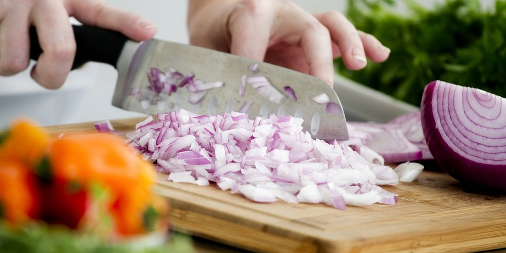
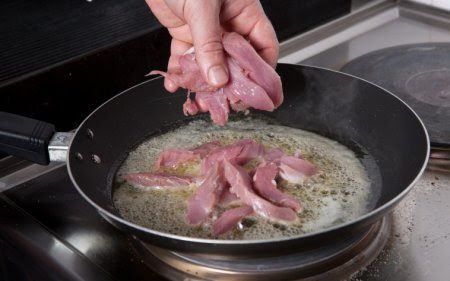
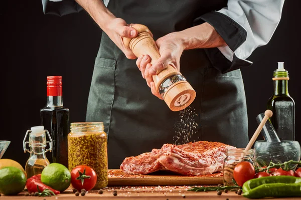

Guláš
postup:
Cibuli nakrájejte na jemno a osmahněte na sádle.
Přidejte nakrájené maso a orestujte ho, dokud nezhnědne.
Přidejte koření: sladkou papriku, sůl, majoránku a česnek. Míchejte a rychle zalijte horkou vodou nebo vývarem.
Vařte pod pokličkou minimálně 2 hodiny, dokud není maso měkké.
Na zahuštění použijte nastrouhaný starší chléb nebo rozkvedlanou hladkou mouku.
Přidejte majoránku a nechte guláš provařit.


